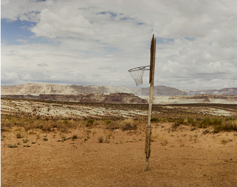

Lecture in Photography: Joel Sternfeld
Please join MoCP and Columbia College Chicago School of Visual Art for a Lecture in Photography with artist Joel Sternfeld.
Known for his large-format color photography of contemporary American life, Joel Sternfeld (American, b. 1944) has described his work as being “concerned with utopic and dystopic possibilities of the American experience.” Since the publication of his landmark book American Prospects in 1987, Sternfeld’s photography has intertwined conceptual and political themes, reflecting his engagement with history, landscape theory, and the passage of time. Two of his works from On This Site (1996), a project examining violence in America, are featured prominently in the museum’s exhibition MoCP at Fifty: Collecting Through the Decades.
MoCP will also honor Joel with the 2026 Silver Camera Award at its annual benefit auction party, Darkroom. Tickets to Darkroom are available for purchase now and through February 26.
Lectures in Photography are co-sponsored by MoCP and Columbia College Chicago School of Visual Arts. *This program is currently at capacity. To be added to the waitlist, please email Alayna Pernell at apernell@colum.edu